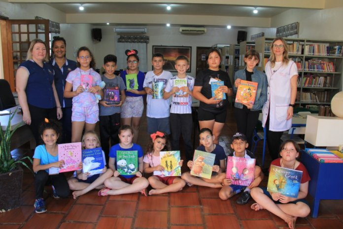
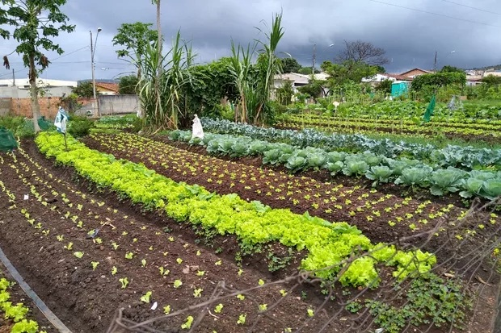
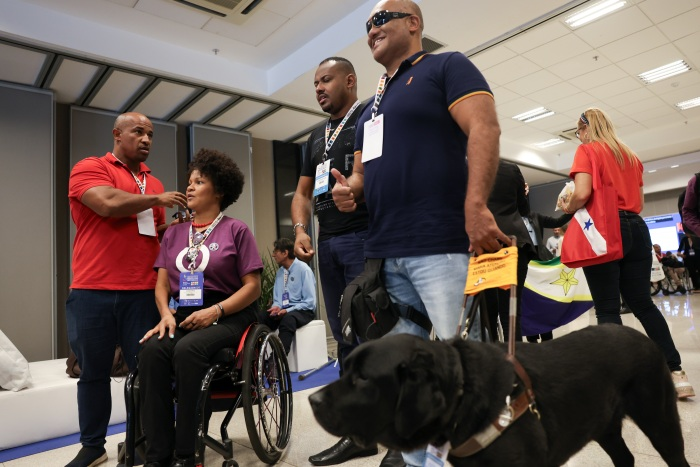

Educar para Crescer
Educação
Reforço escolar e incentivo à leitura.
Conhecer o projetoCores, tipografia, espaçamento, grid e componentes usados em toda a plataforma.
Primária 100--cor-primaria-100
Primária--cor-primaria
Primária escura--cor-primaria-escura
Secundária 100--cor-secundaria-100
Secundária--cor-secundaria
Secundária escura--cor-secundaria-escura
Fundo--cor-fundo
Fundo destacado--cor-fundo-destacado
Borda--cor-borda
Texto--cor-texto
Texto suave--cor-texto-suave
Sucesso--cor-sucesso
Erro--cor-erro
Aviso--cor-aviso
Info--cor-info
Título 1 — 40px
Título 2 — 32px
Título 3 — 25px
Título 4 — 20px
Texto base — 16px
Texto pequeno — 15px
Legenda — 13px
--espaco-1 · 8px--espaco-2 · 16px--espaco-3 · 24px--espaco-4 · 32px--espaco-6 · 48px--espaco-8 · 64pxClasses .col-N, .col-sm-N, .col-md-N e .col-lg-N dentro de .grade-12.
Passe o mouse (hover), use Tab (focus) e clique (active) para ver os estados.
EducaçãoInclusão socialApoio a famíliasSustentabilidadeDesenvolvimento comunitárioNeutro
Sua doação foi registrada.
Não foi possível salvar. Tente novamente.
As inscrições encerram sexta-feira.
Novos projetos serão publicados em novembro.

Educação
Reforço escolar e incentivo à leitura.
Conhecer o projeto
Sustentabilidade
Hortas coletivas e educação ambiental.
Conhecer o projeto
Inclusão social
Capacitação profissional para pessoas com deficiência.
Conhecer o projetoFeche com o botão, clicando fora ou pressionando Esc.